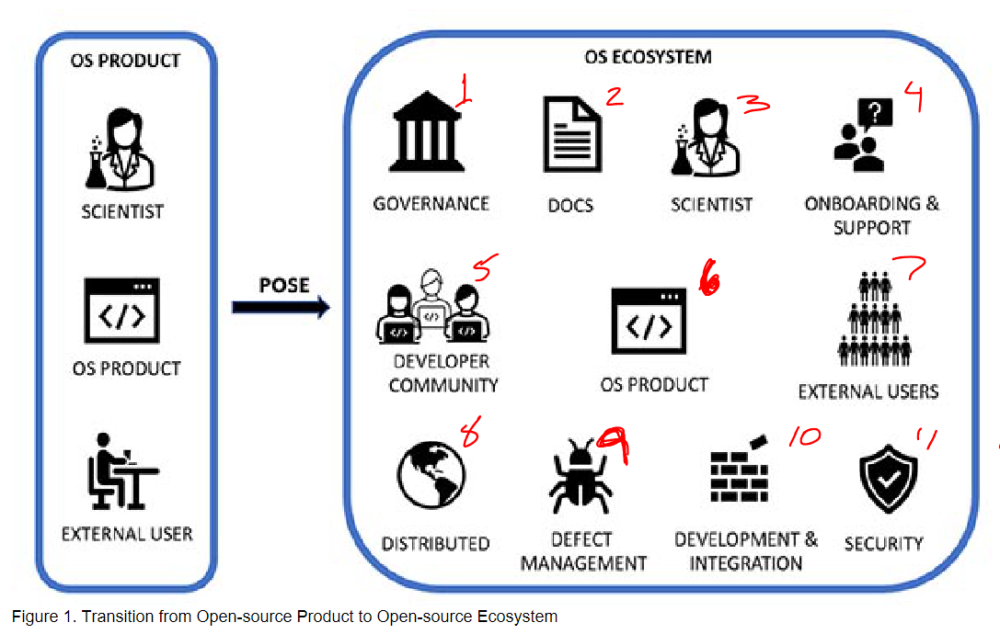

Extracted Key Info from FOA
DUE DATE - 👉5 Sept 2024 👈
- First Thursday of September
- 5PM Submitter's Local Time
NSF POSE PROGRAM DESCRIPTION
NSF POSE program seeks to support:
- new technology solutions to problems of national and societal importance
- open source project shows potential for wide adoption forms basis of a self-sustaining open-source ecosystem (OSE).
- An OSE consists of:
- leadership team
- managing organization with
- well-defined governance structure
- distributed development model
- cohesive community of external content developers
- broad base of users across academia, industry, govt
- OVERARCHING PURPOSE OF POSE is the proactive and intentional fdormation of managing orgs to
- ensure broader and more diverse adoption of FOSS products
- increased ocordination of external intellectual content developer
- more focused route to tech with broad societal impact
Phase 2 proposals (up to $1.5Million over 24 months)
- goal to ESTABLISH a sustainable OSE from an EXISTING and ROBUSTR open source project that
- shows promise to meet an emergent societal or national need, and
- build a community to help develop it
- Phase 2 is to support the TRANSITION of a promising open source project into a sustainable and robust OSE
- *Phase 2 are expected to have done SCOPING ACTIVITIES described in Phase 1, e.g.
- is the product robust,
- is there a community of users,
- is there a community of developers
- Must provide a detailed project plan to support community drvien distributed development and deplolyment of successful open source tools in operational environments, must include:
- Community Outreach Plan that outlines activities to
- engage the intendeded intellectual content developer community that will further develop and maintain the tech, and
- identify user communities and/or organizations that will serve as early adopters
- Phase 2 props must:
- describe current context and long-term vision and impact of proposed OSE
- well-developed cohesive plan for building an OSE including:
- ecosystem establishment/growth
- organzational governance structure
- framework for continuous development, integration, and deployment of tech
- methods for evaluating OSE's effectiveness
- activities to ensure security and privacy
- actvities to build the community
- activities to sustain the ecosystem
1. (PROGRAM) INTRODUCTION
- an OSE is a self-sustaining organization that enables the...
- ongoing
- distributed
- asynchronous...
- ...development of an OS product
- OSE Key components:
- leadership team responsible for:
- governance
- management
- intellectual content developers
- a decentralized and open network devs
- who are committed to the vision of the OSE and contribute their time and XP to develop and maintain the core product
- users who's needs guide the evolution of the project
- OS Community building depends on elements like:
- recruitment
- motivation
- mentoring
- managing
- mediating disputes
-
"OSE's are an important alternative to more common for-profit technology companies and offer several key strengths: they are well suited to multidisciplinary efforts aimed at solving large-scale problems; they engender a sense of ownership among all participants and encourage contributions from new technical disciplines as the OSE evolves; and they avoid costs, delays, and disputes that frequently arise in circumstances where proprietary solutions are developed. OSEs encourage rapid prototyping in moving value from the conception to execution phases, serving as important catalysts for innovation.""
2. PROGRAM DESCRIPTION
- Key attribute of OSEs is a distributed development model in which external intellectual content developers use:
- Continuous (a) devlopment, (b) integration, and (c) deployment model
- "Projects lacking this distributed development aspect are not well suited to POSE"
- POSE IS NOT FOR -
- open-source development
- robustness efforts
- focused communitid with limited impact
- NEGATIVE EXAMPLES
- "open-source software specific to the advanced cyberinfrastructure of a particular scientific community may be better served as a submission to the "Transition to Sustainability" track in the NSF CSSI program"
- "for profit stuff is better for SBIR/STTR"
- POSE IS FOR
- building on exising, robust, open-source product that has active users outside of the founding team
Figure 1

-
The transition from open-source research or innovation project to an OSE requires an organized and intentional approach that depends on many factors:
- The guiding principles and vision of the founding team,
- The specific open-source product being developed,
- The demand for this product withinthe current technological landscape,
- The need for adaptability and flexibility in deployment scenarios,
- a distributed community of intellectual content developers who will drive the collaborative development of the technology, and
- a community of users who will serve as early adopters of the technology.
-
OSEs are frequently supported by an international community of users and developers from different sectors, including:
- academia (researchers/scientists),
- non-profit (hospitals, education), and
- industry (animation, video games, sports, robots, etc)
A fully developed OSE is based on: 1. A robust open-source artifact, 2. managed by an organization that: 1. coordinates an external distributed developer community; 2. interfaces with and supports a community of users; 3. provides training and onboarding to new developers and users; 4. enables efficient continuous development,integration and deployment of the open-source product; 5. maintains an efficient supply chain; 6. ensures security, privacy and reliability of all aspects of the OSE operation 7. maintains appropriate organizational governance practices.
This solicitation seeks two types of proposals: 1. to scope and plan for an OSE (Phase I) [NOT US], and 2. to establish and expand (Phase II) a sustainable OSE based on: 1. an existing and robust open-source product that... 2. shows promise both in the ability to meet an emergent societal or national need and, 3. to build a community to help develop it. 3. Importantly, the open-source product should already: 1. be publicly accessible, preferably via an open-source license (proposers are encouraged to consider licenses approved by the Open Source Initiative) and 2. have some external third-party users and/or external intellectual content developers.
In this context the term "external" means external to the founding team
Figure 2

An OSE supported by POSE, as shown in Figure 2, will comprise three components: 1. a distributed community of intellectual content developers from academia, industry and/or the non-profit sector; 2. a community of third-party end users in research, industry, government, and/or other sectors – some of whom may also be intellectual content developers; 3. and a managing organization.
POSE funding will support the managing organization, the role of which includes all of the functions described above and whose overarching objective is to ensure sustainability of the OSE.
The primary distinction between Phase I and Phase II is that Phase I scoping and planning projects are intended for organizations that are less experienced or knowledgeable in building a distributed intellectual content developer or end user communities, and/or would benefit from learning more about the non-technical roles of a POSE managing organization – e.g., corporate governance, legal and administrative functions, licensing, etc.
Mandatory OSE training - Training will: - enable each awarded team to determine whether there is the potential for a relevant and sustainable OSE for their open-source product, - learn best-practices for building a: - secure, - private, and - sustainable OSE, and - identify broad societal impacts for their OSE. - The program will include experiential learning activities in : - ecosystem discovery - community building, - governance, and s - sustainability of OSEs.
Phase 1: Scoping and Planning Activitites
(i.e. phase 1 activities we're already expected to have done going into Phase 2)
Ecosystem Discovery:
Scoping and Planning (phase 1)
Include a plan for developing a strategy that: 1. describes methods to evaluate and justify the need for the innovation within the current technological landscape; 2. explains why an OSE is the right approach to further develop the technology; and 3. outlines methods to identify potential users who will utilize this technology.
Establishment and Expansion (phase 2)
Include a well-developed ecosystem establishment and ongoing discovery strategy to ensure that the proposed OSE can - effectively grow the open-source product within the current technological landscape, along with specific plans to identify, engage, and support potential users and partners who will serve as early adopters for the product. The inclusion of specific plans to engage industrial and international collaborators are also encouraged
Organization and Governance:
Describe specific activities and their rationale that will identify:
1. the appropriate:
1. organizational,
2. coordination,
3. governance models
4. licensing approach
2. the specific continuous development and integration processes and infrastructure that is most suitable for open, asynchronous, and distributed development of the open-source product,
3. processes for ensuring:
1. quality,
2. security,
3. privacy or
4. ethical concerns of new content
4. the best methods for sustaining the organizational structure, including:
1. metrics to assess and evaluate long-term success of the development methodology,
2. support for users,
3. on-boarding mechanisms for new contributors/developers.
Continuous Development model
Describe the specific continuous development, integration, and deployment methodology and infrastructure that will be employed to enable the open, asynchronous, and distributed development of the open-source product and specific processes for ensuring: - quality control, - security - privacy of new content.
Community Building:
Scoping (Phase 1)
Describe the specific activities to engage potential users and intellectual content developers, including: 1. identification of the specific research and development capabilities required of the potential contributor communities; and 2. mechanisms to engage these communities, e.g.: 1. workshops, 2. hackathons, 3. competitions, 4. research coordination networks, 5. Ideas Labs.
Establishment and growth
Describe a long-term strategy for community building to engage, incentivize, on-board, and support potential users and content developers who will help in further developing and maintaining the open-source product
Sustainability
Articulate clear sustainability goals of the OSE and an actionable evaluation plan, along with *metrics to assess and evaluate success\\\\\
PROPOSAL PREPARATION AND SUBMISSION
Proposal preparation
- Submit through Research.gov
- Proposal must be PREPARED and SUBMITTED in accordance with the general guidelines contained in the NSF Proposal and Award Policies and Procedures Guide (PAPPG): https://www.nsf.gov/publications/pub_summ.jsp?ods_key=papp (Mostly Part 1, chatper 1 and 2)
- Collaborative Proposals:
- POSE proposals are expected to be multi-organizational,
- a single organization must serve as the lead and all other organizations as subawardees.
Proposal Content and Structure
- Title:
-
Proposal titles must begin with "POSE:" and the Phase followed by a colon ":"), and then the title of the project.
- example: proposal to Phase I would have a title of the form
POSE: Phase I: Title.
- example: proposal to Phase I would have a title of the form
-
Project Summary:
-
Keywords:
- The last line of the Project Summary must have a prioritized list of -5 keywords that best characterize the technical field and impact area the OSE is Intended to pursue.
- The first keyword must denote the directorate that most closely matches the technical topic advanced in the OSE:
- Biological Sciences (specified as "BIO"),
- Computer and Information Science and Engineering (CISE),
- Education and Human Resources (EHR),
- Engineering (ENG),
- Geosciences (GEO),
- Mathematical and Physical Sciences (MPS),
- Social, Behavioral and Economic Sciences (SBE)]
- The additional keywords (2-5) must be words (or phrases) that describe the primary intended impact area for the proposed OSE – e.g., "Climate Change", or "Healthcare", etc.
- The list should start with "Keywords:" followed by a list of keywords separated by semi-colons (";").
-
Project Description:
- Describe the activities to be undertaken in up to 15 pages for Phase II proposals.
-
The "Broader Impacts" portion must have a separate section titled "Context of OSE" describing the context and vision of the proposed OSE. This required section must include:
- A description of the guiding principles
- Long-term vision for the proposed OSE,
- The specific societal or national need(s) that the OSE will address, and
- Anticipated broader impacts of the OSE.
-
Budget stuff (See page 10 of FOA PDF)
Supplementary Documents
Letters of Collaboration (Required)
- A minimum of three and up to five letters of collaboration from third-party users or contributors of the open-source product must be uploaded as Supplementary Documents.
- These letters of collaboration must be from current users or contributors (who are not directly related to the proposing team) of the open-source product that is the subject of the proposed OSE.
- Each letter writer should clearly describe how they have contributed and will continue to contribute to the development of an OSE.
- These letters do not have to conform to the standard format specified in the PAPPG. In addition to the above information, each letter of collaboration (not to exceed two pages) must include the name of the letter writer, current affiliations (institution or place of employment), and relationship to the members of the proposing team.
List of Project Personnel, Collaborators, and Partner Organizations (required)
- Provide current, accurate information for all personnel and organizations involved in the project. NSF staff will use this information in the merit review process to manage reviewer selection. The list must include all:
- PIs,
- co-PIs,
- Senior Personnel,
- paid/unpaid consultants,
- collaborators (including everyone who has provided a letter of collaboration),
- subawardees,
- postdocs, and
- project-level advisory committee members.
- This list should be numbered and include (in this order):
- Full name,
- Organization(s), and
- Role in the project,
- each item separated by a semi-colon.
- Each person listed should start a new numbered line.
- For example:
1. Mary Smith; XYZ University; PI
2. John Jones; University of PQR Non-Profit; Senior Personnel
3. Jane Brown; XYZ University; Letter of Collaboration
4. Bob Adams; ABC Community College; Paid Consultant
5. Susan White; DEF Corporation; Unpaid Collaborator
6. Tim Green; ZZZ University; Subawardee
Data Management Plan (required):
- In accordance with the guidance in the PAPPG, proposals must include a Data Management Plan of:
- no more than two pages \
- details in the Data Management Plansection in Research.gov or as a Supplementary Document in Grants.gov).
- The Data Management Plan must be substantive and specific to the project and should address all project-relevant aspects of:
- security
- data privacy.
- In addition to addressing how the project will conform to NSF's policy on the dissemination and sharing of research results
- The Data Management Plan should address the following topics if they are relevant to the project:
- Security:
- The project must describe a security plan if the OSE will collaboratively develop and/or release any artifacts, including (without limitation):
- source code in any form,
- languages or formats,
- hardware instruction sets, hardware designs or specifications,
- scientific methodologies, models, or processes,
- manufacturing processes or process specifications,
- material formulations, and/or
- data.
- The plan should discuss the access control mechanisms that are planned for both users and content developers, and the specific mechanisms that will be in place to ensure:
- (i)quality,
- (ii) secure modification, integration, and release of content (e.g., secure software development methodologies, policies for patching known security vulnerabilities),
- (iii) chain of custody.
- Handling of Sensitive Data:
- If the project involves sensitive data, the plan must discuss:
- the method of data collection
- identification of harms that could arise from its:
- collection or
- inadvertent dissemination,
- techniques that will be used to protect the privacy of individuals and organizations associated with the data
- plans to request IRB and/or IACUC approval for data collection, aggregation, and analysis if applicable.
- Methods for providing other users with controlled access to datasets
- the time period during which data will be available
- policies for authorizing access to the data and techniques (including security protections) that will be used to prevent the unauthorized dissemination of the data should also be discussed
- If the project involves sensitive data, the plan must discuss:
additional information on the Dissemination and Sharing of Research Results, see: https://www.nsf.gov/bfa/dias/policy/dmp.jsp.
Solicitation-Specific Submission Checklist:
The following checklist is provided as a reminder of some important items that should be checked before submitting a proposal to this solicitation. For the items marked with "(RWR)," the proposal will be returned without review if the required item is non-compliant at the submission deadline. Note that these are requirements unique to this solicitation; for other return-without-review requirements, see the PAPPG.
-
[ ] (RWR) The last line of the Project Summary must consist of the word "Keywords" followed by a colon and between 2-5 keywords separated by semi- colons. The first keyword must denote the acronym of the directorate that most closely matches the technical topic advanced in the OSE. The additional keywords (2-5) must be words (or phrases) that describe the primary intended impact area for the proposed OSE – e.g., "Climate Change", or "Healthcare", etc.
-
[ ] (RWR) The Project Description must have a section labeled "Context of the Open-Source Ecosystem" (or "Context of OSE") that discusses the context and vision of the proposed OSE.
-
[ ] (RWR) The maximum budget shown on the Cover Sheet and on the budget sheets must not exceed $300,000 for Phase I proposals and $1,500,000 for Phase II proposals.
- [ ] (RWR) A minimum of three and up to five letters of collaboration from third-party contributors or users of the open-source product must be included as Supplementary Documents.
- [ ] (RWR) *A Project Personnel, Collaborators and Partner Organizations list as a Supplementary Document must be included.
NSF PROCESSING AND REVIEW PROCEDURES
(See FOA section VI for details on review procedure)
Proposers should also be aware of core strategies that are essential to the fulfillment of NSF's mission, as articulated in Leading the World in Discovery and Innovation, STEM Talent Development and the Delivery of Benefits from Research - NSF Strategic Plan for Fiscal Years (FY) 2022 - 2026. These strategies are integrated in the program planning and implementation process, of which proposal review is one part. NSF's mission is particularly well-implemented through the integration of research and education and broadening participation in NSF programs, projects, and activities
✨✨👉NSF 2024-2026 Strategic Plan: https://www.nsf.gov/publications/pub_summ.jsp?ods_key=nsf22068 👈✨✨
One of the strategic objectives in support of NSF's mission is to foster integration of research and education through the programs, projects, and activities it supports at academic and research institutions.
These institutions must recruit, train, and prepare a diverse STEM workforce to advance the frontiers of science and participate in the U.S. technology-based economy.
NSF's contribution to the national innovation ecosystem is to provide cutting-edge research under the guidance of the Nation's most creative scientists and engineers. NSF also supports development of a strong science, technology, engineering, and mathematics (STEM) workforce by investing in building the knowledge that informs improvements in STEM teaching and learning.
NSF's mission calls for the broadening of opportunities and expanding participation of groups, institutions, and geographic regions that are underrepresented in STEM disciplines, which is essential to the health and vitality of science and engineering.
NSF is committed to this principle of diversity and deems it central to the programs, projects, and activities it considers and supports
### Merit Review Criteria
The National Science Foundation strives to invest in a robust and diverse portfolio of projects that: - create new knowledge and - enables breakthroughs in understanding - across all areas of science and engineering - research and education.
To identify which projects to support, NSF relies on a merit review process that incorporates consideration of both the technical aspects of a proposed project and its potential to contribute more broadly to advancing NSF's mission: - "to promote the progress of science; - to advance the national health, prosperity, and welfare; - to secure the national defense; - and for other purposes."
(blah blah blah, see FOA re Intellectual Merit and Broader Impacts)
POSE Solicitation Specific Review Criteria
Phase I proposals will be evaluated on the basis of the following solicitation-specific review criteria {We're Phase 2, so we're expected to hit these too}:
-
Does the proposal present a convincing case that the OSE will address an issue of significant societal or national importance that is not currently being adequately addressed?
-
Does the proposal clearly describe the long-term vision for the OSE, including potential partnerships and sustainability?
-
Does the proposal provide convincing evidence that a substantial user base exists, or could be built, for the open-source product that will be the subject of the OSE?
-
Does the proposal justify the OSE within the current technological landscape and present a strong case that an OSE is the best approach for generating impact?
-
Does the proposal present clear plans for discovering the ecosystem within which the OSE will be operating?
-
Does the proposal present a credible plan for exploring the establishment of a sustainable organizational structure?
-
Does the proposal present a credible plan to develop a strategy for building a community of contributors?
-
Does the proposing team have the required expertise and experience to undertake the Phase I activities described in the solicitation?
-
Will NSF support serve as a critical catalyst for the establishment of the OSE?
-
Does the proposal include third-party letters of collaboration from current users of the open-source product that is the subject of the OSE?
Phase II proposals will be evaluated on the basis of the following solicitation-specific review criteria:
-
Does the proposal present a convincing case that the OSE will address an issue of significant societal or national importance that is not currently being adequately addressed?
-
Does the proposal clearly describe the long-term vision for the OSE, including potential partnerships and sustainability?
-
Does the proposal provide convincing evidence that a substantial user base exists for the open-source product that will be the subject of the OSE?
-
Does the proposal justify the OSE within the current technological landscape and present a strong case that an OSE is the best approach for generating impact?
-
Does the proposal present a clear and comprehensive description of the ecosystem within which the OSE will be operating along with plans for ongoing ecosystem establishment/growth and discovery?
-
Does the proposal present a specific, actionable plan for establishing a sustainable organizational structure?
-
Does the proposal present a credible strategy and actionable plan for building a community of contributors and retaining contributors?
-
Does the proposal include a clear, detailed licensing approach for the open-source product that is the subject of the OSE?
-
Does the proposal clearly describe a build and test infrastructure, and procedures to address quality control and security of new content?
-
Does the proposal present a clear, actionable evaluation plan to measure the success of the OSE with respect to its sustainability goals?
-
Does the proposing team have the required expertise and experience to undertake the Phase II activities described in the solicitation?
-
Will NSF support serve as a critical catalyst for the establishment and growth of the OSE towards achieving sustainability?
-
Does the proposal include third-party letters of collaboration from current users of the open-source technology that is the subject of the OSE?